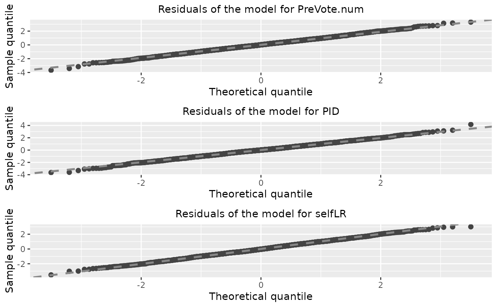

A set of visualization tools for the diagnostic of the fitted model in
the partial association analysis. It can provides a plot matrix including Q-Q plots,
residual-vs-fitted plots, residual-vs-covariate plots of all the fitted models.
This function also support the direct diagnostic of the cumulative link regression model
in the class of clm, glm, lrm,
orm, polr. Currently, vglm
is not supported.
diagnostic.plot(object, ...) # S3 method for default diagnostic.plot(object, ...) # S3 method for resid diagnostic.plot(object, output = c("qq", "fitted", "covariate"), ...) # S3 method for PAsso diagnostic.plot( object, output = c("qq", "fitted", "covariate"), model_id = NULL, x_name = NULL, ... ) # S3 method for glm diagnostic.plot( object, output = c("qq", "fitted", "covariate"), x = NULL, fit = NULL, distribution = qnorm, ncol = NULL, alpha = 1, xlab = NULL, color = "#444444", shape = 19, size = 2, qqpoint.color = "#444444", qqpoint.shape = 19, qqpoint.size = 2, qqline.color = "#888888", qqline.linetype = "dashed", qqline.size = 1, smooth = TRUE, smooth.color = "red", smooth.linetype = 1, smooth.size = 1, fill = NULL, resp_name = NULL, ... ) # S3 method for clm diagnostic.plot(object, output = c("qq", "fitted", "covariate"), ...) # S3 method for lrm diagnostic.plot(object, output = c("qq", "fitted", "covariate"), ...) # S3 method for orm diagnostic.plot(object, output = c("qq", "fitted", "covariate"), ...) # S3 method for polr diagnostic.plot(object, output = c("qq", "fitted", "covariate"), ...)
Arguments
| object | The object in the support classes (This function is mainly designed
for |
|---|---|
| ... | Additional optional arguments can be passed onto |
| output | A character string specifying what type of output to plot. Default is
|
| model_id | A number refers to the index of the model that needs to be diagnosed. If NULL, all models will be diagnosed. |
| x_name | A string refers to the covariate name that needs to be diagnosed. If NULL, all adjustments will be diagnosed. |
| x | A vector giving the covariate values to use for residual-by-
covariate plots (i.e., when |
| fit | The fitted model from which the residuals were extracted. (Only
required if |
| distribution | Function that computes the quantiles for the reference
distribution to use in the quantile-quantile plot. Default is |
| ncol | Integer specifying the number of columns to use for the plot
layout (if requesting multiple plots). Default is |
| alpha | A single values in the interval [0, 1] controlling the opacity
alpha of the plotted points. Only used when |
| xlab | Character string giving the text to use for the x-axis label in
residual-by-covariate plots. Default is |
| color | Character string or integer specifying what color to use for the
points in the residual vs fitted value/covariate plot.
Default is |
| shape | Integer or single character specifying a symbol to be used for plotting the points in the residual vs fitted value/covariate plot. |
| size | Numeric value specifying the size to use for the points in the residual vs fitted value/covariate plot. |
| qqpoint.color | Character string or integer specifying what color to use for the points in the quantile-quantile plot. |
| qqpoint.shape | Integer or single character specifying a symbol to be used for plotting the points in the quantile-quantile plot. |
| qqpoint.size | Numeric value specifying the size to use for the points in the quantile-quantile plot. |
| qqline.color | Character string or integer specifying what color to use for the points in the quantile-quantile plot. |
| qqline.linetype | Integer or character string (e.g., |
| qqline.size | Numeric value specifying the thickness of the line in the quantile-quantile plot. |
| smooth | Logical indicating whether or not too add a nonparametric
smooth to certain plots. Default is |
| smooth.color | Character string or integer specifying what color to use for the nonparametric smooth. |
| smooth.linetype | Integer or character string (e.g., |
| smooth.size | Numeric value specifying the thickness of the line for the nonparametric smooth. |
| fill | Character string or integer specifying the color to use to fill
the boxplots for residual-by-covariate plots when |
| resp_name | Character string to specify the response name that will be displayed in the figure. |
Value
A "ggplot" object for supported models. For class "PAsso", it returns a plot in
"gtable" object that combines diagnostic plots of all responses.
A "ggplot" object based on the input residuals.
A "ggplot" object based on the input residuals.
A plot in "gtable" object that combines diagnostic plots of all responses.
A "ggplot" object based on the residuals generated from glm object.
A "ggplot" object based on the residuals generated from clm object.
A "ggplot" object based on the residuals generated from lrm object.
A "ggplot" object based on the residuals generated from orm object.
A "ggplot" object based on the residuals generated from polr object.
Examples
# Import data for partial association analysis data("ANES2016") ANES2016$PreVote.num <- as.factor(ANES2016$PreVote.num) PAsso_3v <- PAsso(responses = c("PreVote.num", "PID", "selfLR"), adjustments = c("income.num", "age", "edu.year"), data = ANES2016, uni.model = "probit", method = c("kendall"), resids.type = "surrogate", jitter = "latent") diag_p1 <- diagnostic.plot(object = PAsso_3v, output = "qq")diag_p2 <- diagnostic.plot(object = PAsso_3v, output = "fitted")diag_p3 <- diagnostic.plot(object = PAsso_3v, output = "covariate")#>#> Warning: Computation failed in `stat_smooth()`: #> x has insufficient unique values to support 10 knots: reduce k.#> Warning: Computation failed in `stat_smooth()`: #> x has insufficient unique values to support 10 knots: reduce k.#> Warning: Computation failed in `stat_smooth()`: #> x has insufficient unique values to support 10 knots: reduce k.# Simply diagnose a model # Fit cumulative link models fit1 <- ordinal::clm(PreVote.num ~ income.num + age + edu.year, data = ANES2016, link = "logit") # diagnostic.plot plot_qq_1 <- diagnostic.plot(object = fit1, output = "qq") plot_fit_1 <- diagnostic.plot(object = fit1, output = "fitted") plot_cov_1 <- diagnostic.plot(object = fit1, output = "covariate")#>